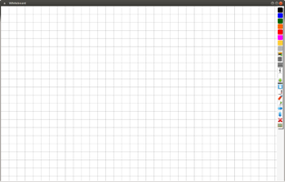

Quizdidaktik4Whiteboard
Dieser Artikel wurde für die folgenden Ubuntu-Versionen getestet:
Ubuntu 14.04 Trusty Tahr
Zum Verständnis dieses Artikels sind folgende Seiten hilfreich:
Quizdidaktik4Whiteboard  ist eine Werkzeugsammlung für die Nutzung interaktiver Whiteboards direkt in einem Webbrowser, wobei hier entweder Chromium bzw. Google Chrome oder Firefox empfohlen werden.
ist eine Werkzeugsammlung für die Nutzung interaktiver Whiteboards direkt in einem Webbrowser, wobei hier entweder Chromium bzw. Google Chrome oder Firefox empfohlen werden.
Enthalten sind vier Module:
Whiteboard (Tafelanschrieb)
Folie (OHP-Folie)
Webseitenbeschrifter (Anzeige und Beschriftung von Webseiten, aber auch von lokalen PDF-Dateien sowie Kombination von Tastatureingaben und Freihandbeschriftung)
Lückentext (Arbeitsblätter, die vom Schüler bearbeitet werden können)
Die Quizdidaktik4Whiteboard-Werkzeuge stehen unter der Lizenz CC BY-NC 4.0  . Die Lizenzen der verwendeten JavaScript-Bibliotheken sind in der im Programmverzeichnis enthaltenen Datei LICENSE.txt aufgeführt.
. Die Lizenzen der verwendeten JavaScript-Bibliotheken sind in der im Programmverzeichnis enthaltenen Datei LICENSE.txt aufgeführt.
Installation¶
Online-Version¶
Die Start- und Übersichtsseite der Online-Version ist direkt aufrufbar. Der Vorteil der Online-Version besteht darin, dass hier einerseits Neuerungen früher als in die Offline-Versionen einfließen und dass manche Funktionen – etwa das Nachladen lokal gespeicherter .odt-Dateien im Webseitenbeschrifter – ausschließlich in der online-Version verfügbar sind.
Für einen schnellen Zugriff wird auch eine Chrome-Extension  angeboten. Da deren Installation hier nicht über den Chrome Web Store läuft, muss die Datei quizdidaktik4whiteboard-chrome.crx zunächst lokal gespeichert werden. Dann wählt man zur Installation entweder die Option "Tools → Erweiterungen" aus oder gibt alternativ die URL
angeboten. Da deren Installation hier nicht über den Chrome Web Store läuft, muss die Datei quizdidaktik4whiteboard-chrome.crx zunächst lokal gespeichert werden. Dann wählt man zur Installation entweder die Option "Tools → Erweiterungen" aus oder gibt alternativ die URL chrome://extensions ein. Nun kann man die .crx-Archivdatei einfach per Drag und Drop auf die angezeigte Erweiterungsseite ziehen.
Anschließend ist ein Quizdidaktik-Symbol in der oberen Menüleiste sichtbar, über dessen Auswahlmenü die Übersichtsseite sowie die Online-Fassung aller Module direkt angesteuert werden können.
Experten-Info:
Möchte man vor der Installation der Chrome-Extension deren Quelltext überprüfen, so kann man die Endung der heruntergeladenen Datei einfach von .crx in .zip abändern und das Archiv anschließend entpacken [5].
Offline-Version¶
Die folgenden Offline-Versionen sind in erster Linie für Geräte gedacht, die nicht zuverlässig mit dem Internet verbinden sind. Diese Situation ist leider an manchen Schulen noch immer häufig wie z.B. bei transportablen Laptop-Beamer-Einheiten gegeben. Ein Debian-Paket (.deb) der unter Linux nutzbaren Offline-Version kann wie folgt installiert werden.
Hinweis:
Für die Nutzung auch unter Windows oder Mac OS X wird für Schulen auf Antrag ein Download-Link zu einem .zip-Archiv vom Programmautor bereitgestellt.
Vorbereitung¶
Zuerst installiert man Google Chrome. Dieser Webbrowser wird als Abhängigkeit benötigt, da er einerseits mit der Startoption --app="URL" einen platzsparenden App-Modus ganz ohne Werkzeug- und Navigationsleiste bietet und andererseits z.B. auch .mp3-Dateien abspielen kann.
Programminstallation¶
Man legt die Datei /etc/apt/sources.list.d/quizdidaktik4whiteboard.list mit dem folgenden Inhalt [2][3] an:
deb http://quizdidaktik.de/4whiteboard/downloads/deb ./
Nun aktualisiert man die Paketquellen und installiert das (nicht signierte) Paket mit den folgenden Befehlen [1][2]:
sudo apt-get update sudo apt-get install --allow-unauthenticated quizdidaktik4whiteboard
Hinweis!
Zusätzliche Fremdquellen können das System gefährden.
Anmerkung: Nach erfolgreicher Installation wird die Paketquelle automatisch mit einem vorangestellten # auskommentiert:
#deb http://quizdidaktik.de/4whiteboard/downloads/deb ./
Nach der Installation werden bei Ubuntu-Varianten mit einem Anwendungsmenü die dazugehörigen Menüeinträge in der Kategorie "Bildung" angelegt. Möchte man jeweils einen zusätzlichen Eintrag in einer eigenen Kategorie "Quizdidaktik4Whiteboard", folgt man der Anleitung am Ende des Artikels.
Experten-Info:
Für die Offline-Version wird kein Webserver benötigt. Auf alle Dateien wird über file:// bzw. data:// zugegriffen. Als JavaScript-Frameworks werden jQuery und Raphaël verwendet, als Editor-Komponente der TinyMCE . Mathematische Formeln werden mit MathJax dargestellt.
Beim Abspeichern werden keine Daten an einen Server gesendet, sondern es werden mit JSZip clientseitig .zip-Archive erstellt. Für die Anzeige von OpenDocument-Dateien im Webseitenbeschrifter wird WebODF verwendet.
Verwendung¶
Whiteboard¶
|  |
| Whiteboard |
Freihandschreiben (allerdings ohne Handschriftenerkennung und ohne Eingabe per Tastatur) oder gerade Linien an einem interaktiven Whiteboard erfolgen über die Maus oder ein Grafiktablet direkt im Webbrowser. Es können eigene Bilddateien als zu beschriftende Hintergrundfläche geladen und verschiedene Schriftfarben ausgewählt werden. Neben einem Design mit hellem Hintergrund ist auch ein dunkelgrüne, kreidetafelartige Version auswählbar. Der aktuelle Folieninhalt kann jeweils als Bilddatei im SVG-Format gespeichert oder als fixierter Hintergrund in eine Notebook-Datei exportiert werden.
Beispiel für den Unterrichtseinsatz: Der Lehrer entwickelt wie an der Kreidetafel schrittweise einen Hefteintrag. Zusätzlich kann eine (vorher bereits passend skalierte) Bilddatei als Hintergrundbild geladen werden. Der Lehrer kann auch die noch unfertige Bilddatei in verschiedenen Stadien speichern und diese z.B. vom Schüler ergänzen und erneut speichern lassen und in digitaler Form als SVG-Datei einsammeln.
Folie¶
| Folie |
Zur Erstellung und Bearbeitung einzelner digitaler Folien im HTML-Format, die im Webbrowser angezeigt werden können und in denen sich vorher festgelegte Bereiche durch Anklicken aufdecken oder auch wieder verbergen lassen. Als Hauptvorteil gegenüber einer linearen Präsentation ist die Anzeigereihenfolge flexibel auswählbar. Im Direktbearbeitungsmodus können auch noch während der Präsentation nachträgliche Änderungen direkt in der Folie vorgenommen werden.
Die Schriftgröße und die Seitengröße sind optimiert für eine Bildschirmauflösung von ca. 1280x800. Bilddateien werden per Drag&Drop direkt in die HTML-Datei mit eingebettet. Mathematische Formeln können über TeX eingegeben werden. MP3-Dateien können direkt abspielbar in die HTML-Datei eingebettet werden. Für chemische Formeln ist eine eigene Umwandlungsfunktion von Ladungen und Indizes in die entsprechenden Unicode-Zeichen eingebaut, so wird z.B. die Eingabe H2O zu H₂O.
Beispiel für den Unterrichtseinsatz: Die Schüler haben bereits ein entsprechend gestaltetes Arbeitsblatt bearbeitet und die Lösungen werden nun gemeinsam verglichen, etwa an einem interaktiven Whiteboard oder über einen Beamer. Traditionell entspräche dies einem schrittweise Aufdecken oder Ausfüllen einer OHP-Folie.
Webseitenbeschrifter¶
| Webseitenbeschrifter |
Es können beliebige Internetseiten angezeigt oder auch lokal gespeicherte PDF-Dateien und Bilddateien in den Hintergrund geladen und darauf direkt Inhalte markiert oder handschriftlich in verschiedenen Farben ergänzt werden. Die Linienstärke sowie die Farbe kann so eingestellt werden, dass von einem breiten hellen und transparenten Markerstift bis zu einer dünnen, dunklen Beschriftungslinie verschiedene Stiftvarianten zur Hervorhebung oder Ergänzung eingesetzt werden können.
Die Webseite bzw. die darüberliegende Zeichenfläche können abwechselnd in den Vorder- bzw. Hintergrund gerückt werden für die Freihandbeschriftung bzw. eine Interaktion direkt mit der Webseite, etwa im Falle einer interaktiven Folie oder eines Lückentexts. Die Seitengröße ist optimiert für eine Bildschirmauflösung von ca. 1280x800. Neben Webseiten können auch lokal gespeicherte HTML-Dateien, PDF-Dateien sowie Bitmap- und Vektorgrafiken als Hintergrund geladen werden.
Beispiel für den Unterrichtseinsatz: Der Lehrer markiert direkt in einer online-Quelle wichtige Textstellen oder Bereiche eines Diagramms und speichert anschließend ein Bildschirmfoto (Screenshot).
Lückentext¶
| Lückentext |
Erstellung und Bearbeitung von Lückentexten im HTML-Format, die im Webbrowser bearbeitet und ausgewertet werden können. Bilddateien werden per Drag&Drop direkt in die HTML-Datei mit eingebettet. Mathematische Formeln können (außerhalb der Lücken) über TeX eingegeben werden.
Beispiel für den Unterrichtseinsatz: Die Schüler selbst entwerfen zunächst eigene Lückentext-Vorlagen zu einem bestimmten Themengebiet und speichern sich diese als HTML-Datei ab. Anschließend tauschen sie ihre Lückentexte untereinander aus und besprechen die noch vorhandenen Verbesserungsmöglichkeiten (z.B. weitere sinnvolle Alternativantworten). Der Lehrer sammelt diese HTML-Dateien ein und erstellt daraus eine optimierte Gesamtfassung. Diese wird über einen Export in eine mebis/Moodle-Lückentextfrage übernommen und in einem mebis/Moodle-Kurs vom Schüler mit zentraler Auswertung bearbeitet.
Import und Export¶
Mit dem Whiteboard kann man SVG-Grafiken mit im Hintergrund eingebetteten Bitmapgrafiken erstellen.
Mit dem Folien- und dem Lückentext-Werkzeug werden jeweils HTML-Dateien gespeichert.
Der Webseitenbeschrifter dient anschließend gewissermaßen als „Klebstoffwerkzeug“, mit dem neben online und offline HTML-Dateien auch PDF-Dateien, Bilddateien sowie Dateien im OpenDocument Format angezeigt und beschriftet werden können.
Neben diesem eher auf Präsentation ausgerichtetem Einsatz bietet das Lückentext-Werkzeug zusätzlich die Möglichkeit, die HTML-Dateien zum Üben direkt an die Schüler zu verteilen. Die so erzeugten Lückentexte können auch ins "General Import Format Technology" (GIFT) exportiert werden. Dieses kann anschließend für Moodle-Testfragen auch mit serverseitiger Auswertung weiterverwendet werden. Für eine vereinfachte Testerstellung bieten sich auch noch weitere Online-Werkzeuge zur Testfragenerstellung an.
| Dateiformate und Zusammenspiel der verschiedenen Werkzeuge sowie mit Moodle |
Problembehebung¶
Separate Menüeinträge¶
Dazu kann hierfür einmalig das folgende Skript installiere_quizdidaktik4whiteboard_menues.sh im Editor erstellt und ausgeführt [1][3][4] werden:
1 2 3 4 5 6 7 8 9 10 11 12 13 14 15 | #!/bin/bash DIRECTORYVERZ='/usr/share/desktop-directories' DESKTOPVERZ='/usr/share/applications' VENDOR='quizdidaktik4whiteboard' MODULE=('start' 'whiteboard' 'folie' 'webseitenbeschrifter' 'lueckentext' 'handbuch') for STARTER in "${MODULE[@]}" ; do if [ -e "${DIRECTORYVERZ}/${VENDOR}-${VENDOR}.directory" ] && [ -e "${DESKTOPVERZ}/${VENDOR}-${STARTER}.desktop" ] ; then xdg-desktop-menu install "${DIRECTORYVERZ}/${VENDOR}-${VENDOR}.directory" "${DESKTOPVERZ}/${VENDOR}-${STARTER}.desktop"; else echo "Die Desktop-Datei ${VENDOR}-${STARTER}.desktop ist nicht vorhanden - wurde das Debian-Paket schon installiert?" fi done |
Für eine systemweite Installation wechselt man in den Speicherort des Skripts und führt dort die folgenden Befehle [1][2] aus:
chmod +x installiere_quizdidaktik4whiteboard_menues.sh sudo ./installiere_quizdidaktik4whiteboard_menues.sh
 Übersichtsartikel, der auch auf die Belange von Schulen eingeht
Übersichtsartikel, der auch auf die Belange von Schulen eingeht- Erstellt mit Inyoka
-
 2004 – 2017 ubuntuusers.de • Einige Rechte vorbehalten
2004 – 2017 ubuntuusers.de • Einige Rechte vorbehalten
Lizenz • Kontakt • Datenschutz • Impressum • Serverstatus -
Serverhousing gespendet von